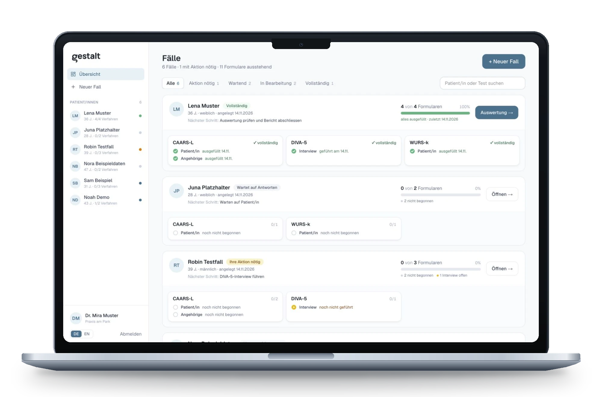
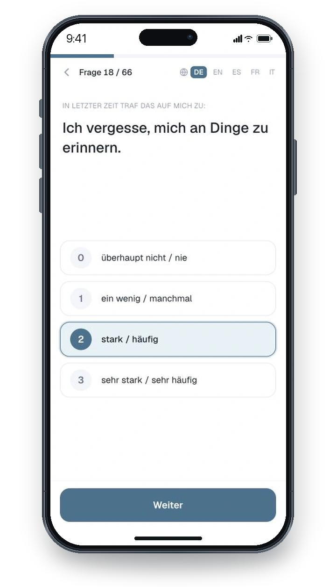
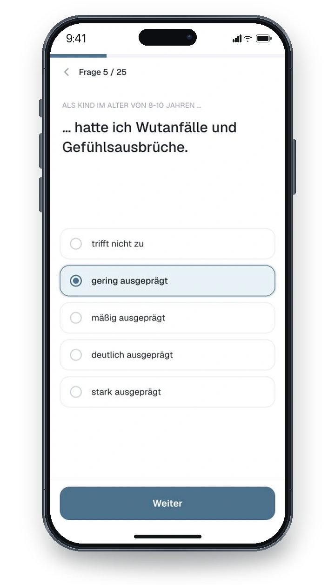
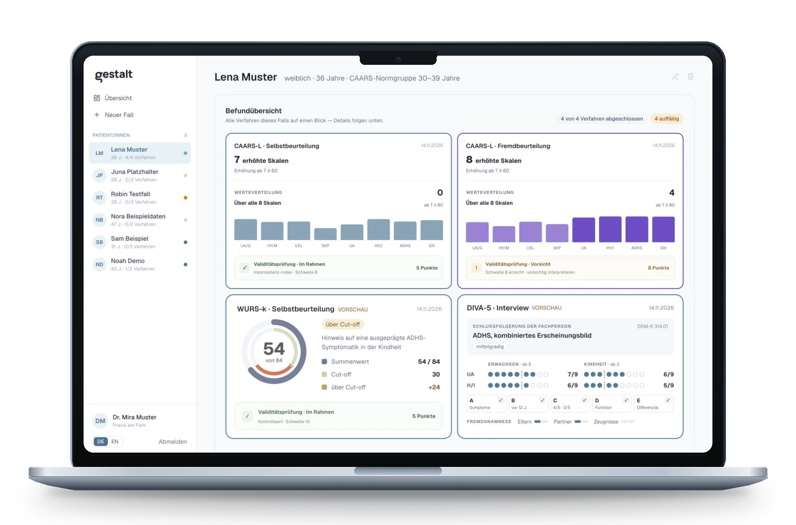
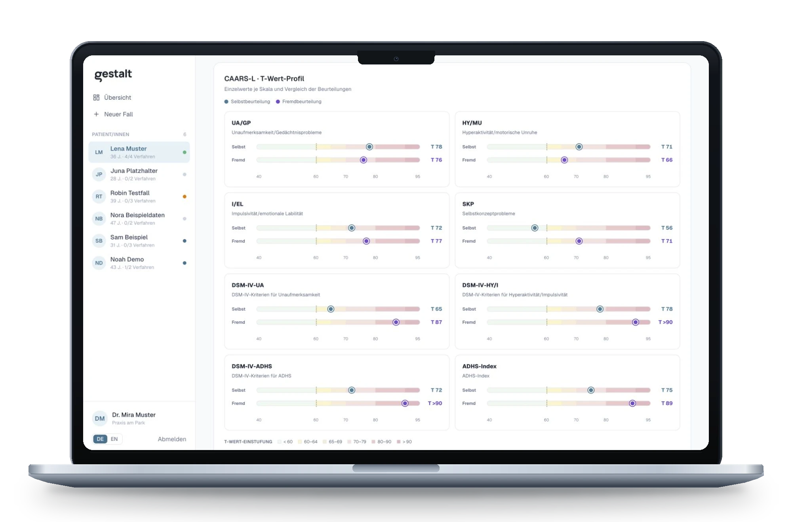
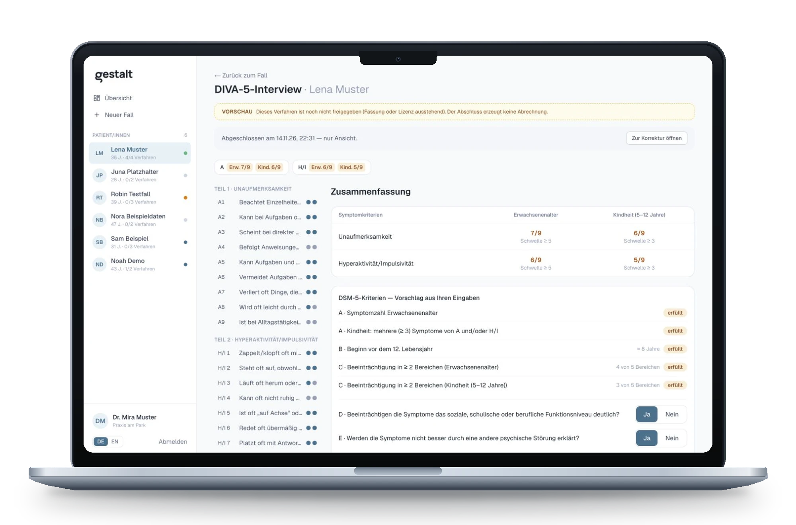
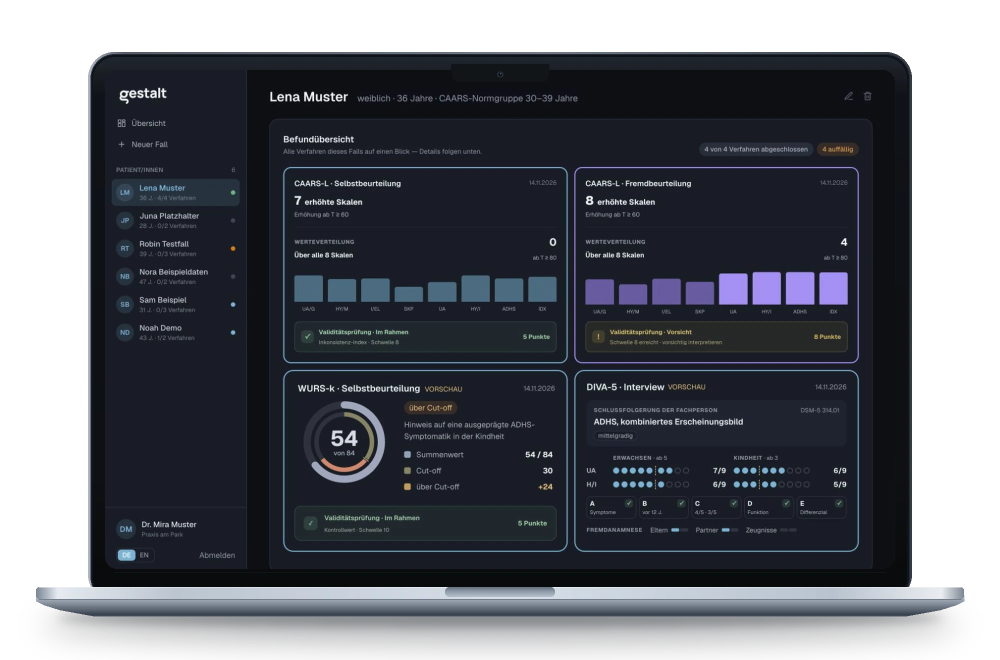

Product design case study · Clinical software, built from zero
Gestalt
From paper questionnaires to one clear picture
Gestalt is a diagnostics platform for clinicians who assess ADHD in adults. I researched, designed and built the whole product, working closely with a professor from Harvard and ETH Zurich.

Diagnosis on Paper
An adult ADHD assessment still runs on paper. The patient and a relative each fill in long questionnaires. The clinician adds up the answers by hand, looks up every sum in printed norm tables and compares the two views. That takes time, and one slip in a sum changes the result.
One Case, Three People
The clinician opens a case and picks the instruments. Patient and relative each get a one-time link and answer on their own phone, with no account and no app.
-
01
The clinician sets up the case
They choose the instruments and send the links from their own email.
-
02
Patient and relative answer
One question per screen. The people answering are being assessed for attention difficulties, so nothing else competes for it.
-
03
Results arrive scored
T-scores, validity checks and a report draft are ready when the last form comes in.


Every Result in One View
The findings overview puts all instruments of a case side by side. The name Gestalt comes from here: the single results only mean something as a whole.

One card per instrument
The key number first, the distribution second, the detail one scroll away.
Two colours, two voices
Blue is the patient and violet is the relative, on every screen.
Doubt stays visible
If answers look inconsistent, the card says so before anyone reads the score.


Fig. 06 Dark theme
Designed as a system
Every screen draws on one set of tokens for colour, type and spacing. Dark mode is a second theme on the same components.

Sensitive Data, Clear Rules
I built Gestalt with AI coding agents, and it handles class 4 client data: psychiatric health information. So the rules for AI and for data were set before the first screen was designed.
Encrypted end to end
Client data is encrypted end to end, from the patient's phone to the clinician's screen.
AI writes code, it never reads patients
AI agents helped me write the software. The scoring is plain, deterministic code, tested against the official norm tables. No patient answer is sent to an AI model.
The clinician decides
Gestalt scores, compares and suggests. The diagnosis is always the clinician's, and the interface labels its own output as a suggestion.
As little data as possible
Patients need no account. A relative sees a first name and an initial. Billing shows no patient data, and every link works once.
Built from Zero
There was no team and no handover. Research, product decisions, design and code came from one desk, in close exchange with the professor.
Interviews with physicians about how an assessment really runs.
Case flow, roles, instrument licences and billing per form.
A design system with two themes and its own data visualisation.
Next.js and TypeScript, with a scoring engine for every instrument.
Where it stands. Gestalt is in a private test phase with clinicians. Instruments without a cleared licence run as previews only. That is the "Vorschau" label in some of the screens above.